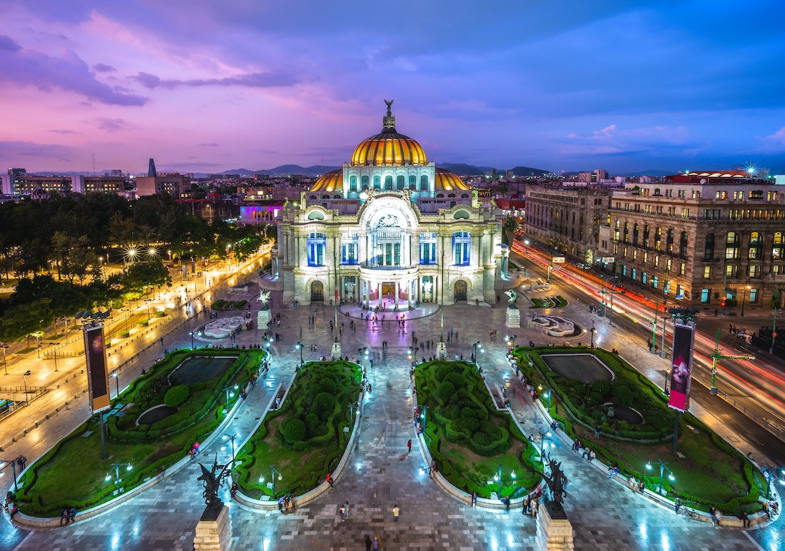
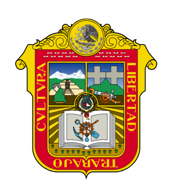
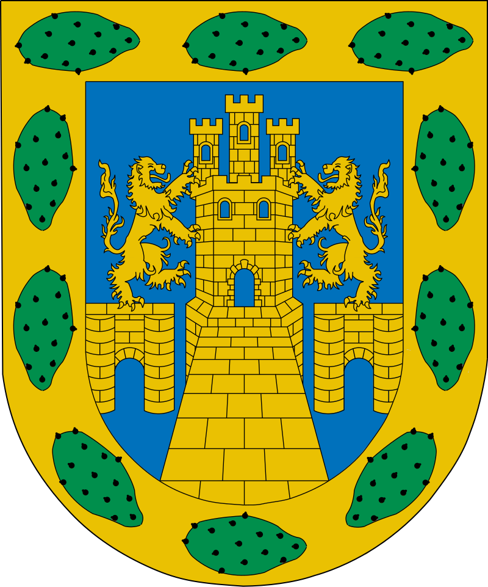
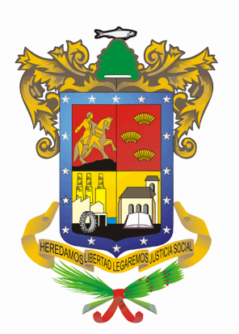

My favorite states of Mexico
Living on Mexico for quite some time, I have developed some attachment to certain states due to my likeness on everything that was there
- State of Mexico 
- The City of Mexico 
- Michoacan 
My homeland since the day that I was born, despite all the wrongdoings that often appear on the local news, the state as a whole has a special charm mostly as a byproduct of all the local cultures that are very close to the national history. Thus giving it a sizeble ammount of places to visit with various cultures
The main city of the nation and it´s capital. The cultural and economical center of the whole nation, thus the very best things inhhabit the city with so many services Many places to visit and expirence with everything, since the great cultural centers that display the very old civilization that used to live on the lake of Texcoco.
A common place often related to very especific things, such as the land of avocado and crops. Despite the very agricultural aspect of said state there are many other cultural places to visit thanks to the sister culture of the Purepechas